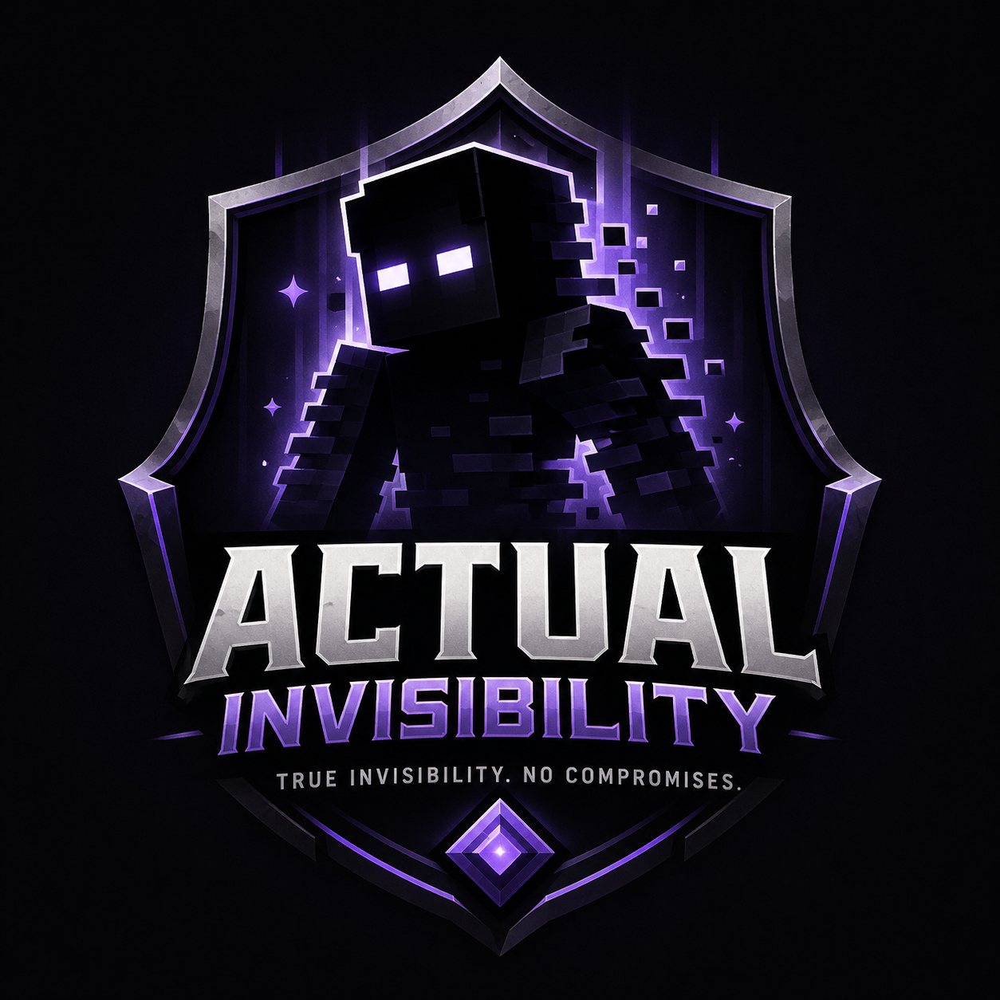

True invisibility
Invisible players stay hidden across core vanilla-facing surfaces instead of only disappearing visually.
Lock down hidden movement, fake obfuscated aliases, death and chat protection, and clean Paper-ready behavior in one polished invisibility experience built for modern Minecraft servers.

Every core surface is shaped around stealth, premium presentation, and reliable Paper behavior.
Invisible players stay hidden across core vanilla-facing surfaces instead of only disappearing visually.
Death flow stays clean with protected naming so combat never breaks the illusion.
High-priority resync logic is tuned to reduce reveal windows and avoid awkward flicker.
The fake name layer uses premium dark styling and Minecraft magic-text flavor for believable stealth.
Event-driven handling keeps the effect light while still refreshing hidden identity states smoothly.
Built around a modern Paper setup with Skript-powered automation and practical server workflow.
The page keeps the fantasy clean while still being honest about how the current Skript package is actually used.
/invis on
/invis off
/sk reload actual_invisibility
/effect give @p minecraft:invisibility 99999 0 true
This snippet is taken from the provided file and focuses on the configuration surface plus one of the invisibility protection paths.
Download the current deliverable as `actual_invisibility.sk`, tuned for Paper `1.21.11` and presented like a premium plugin release.
Includes the current Skript artifact used for the on-page preview.
Fast enough for a fresh test server, clean enough for a polished production stack.
Place actual_invisibility.sk inside your /plugins/Skript/scripts/ folder.
Use /sk reload actual_invisibility or restart the server to initialize the stealth logic.
Apply the invisibility effect and let the script automatically handle aliases, visibility, and message protection.